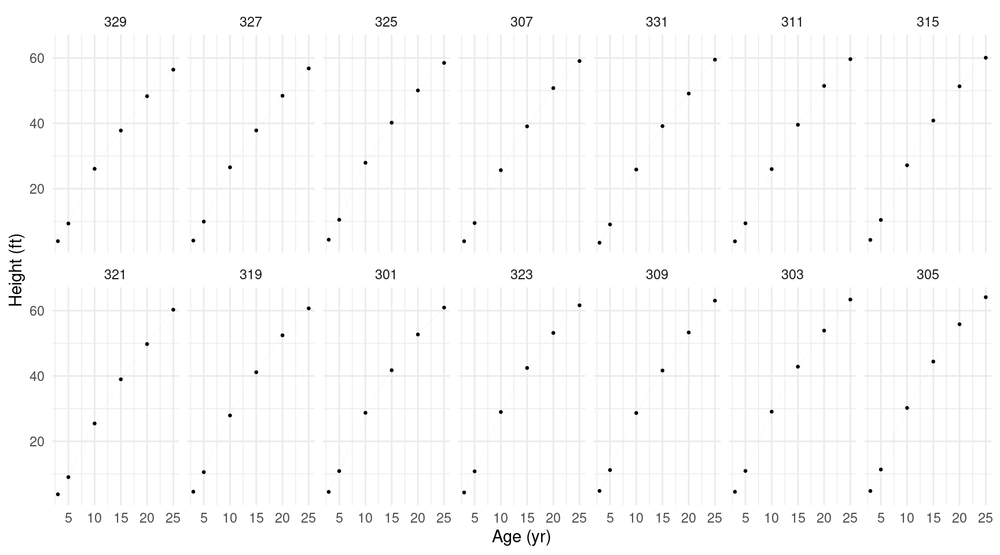
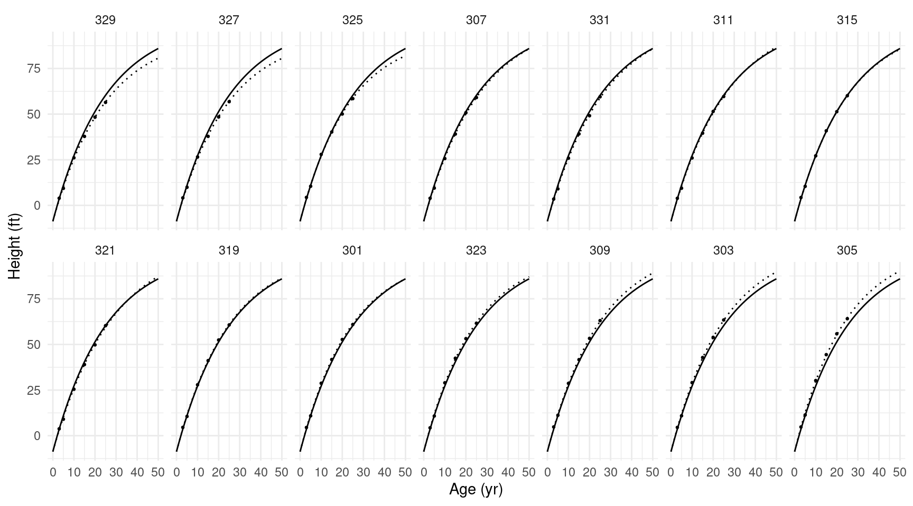
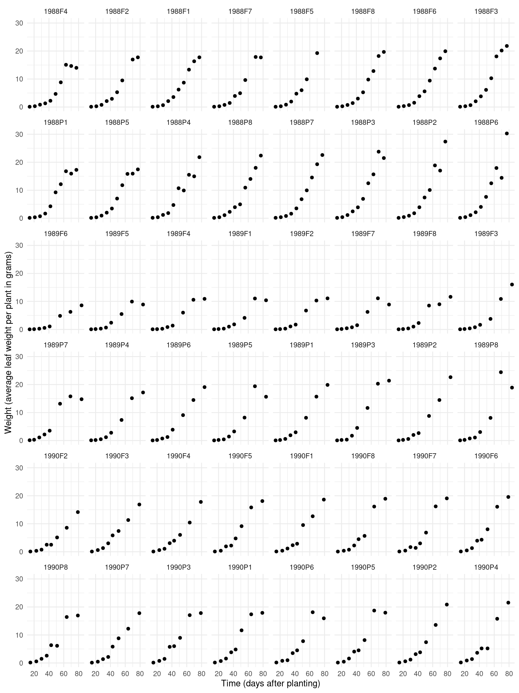
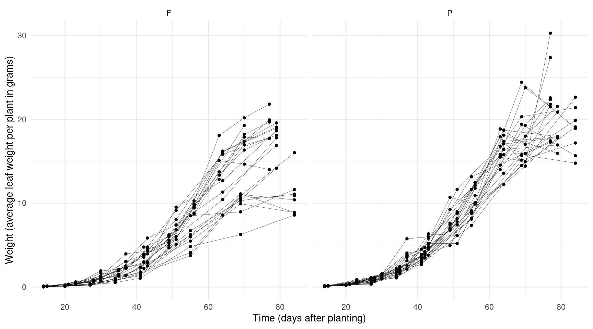
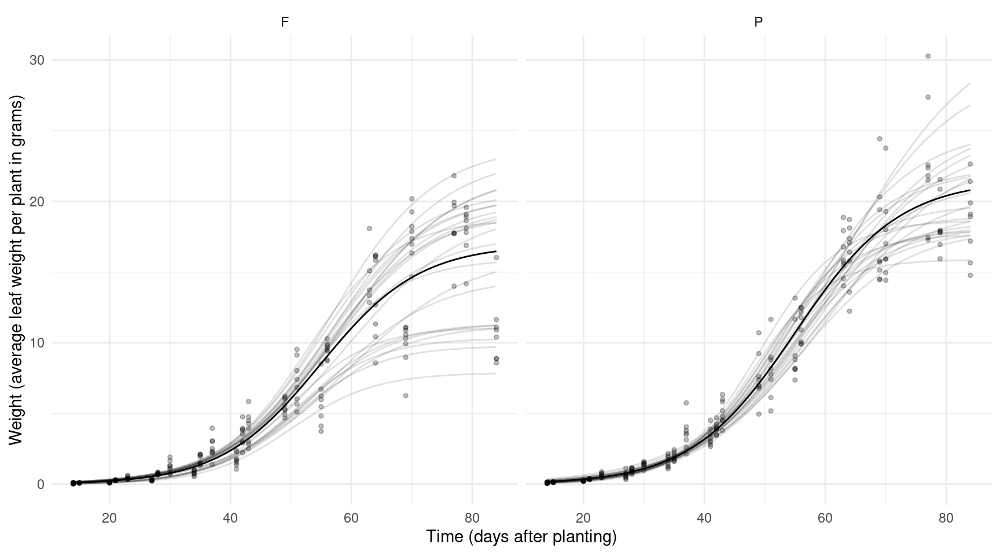
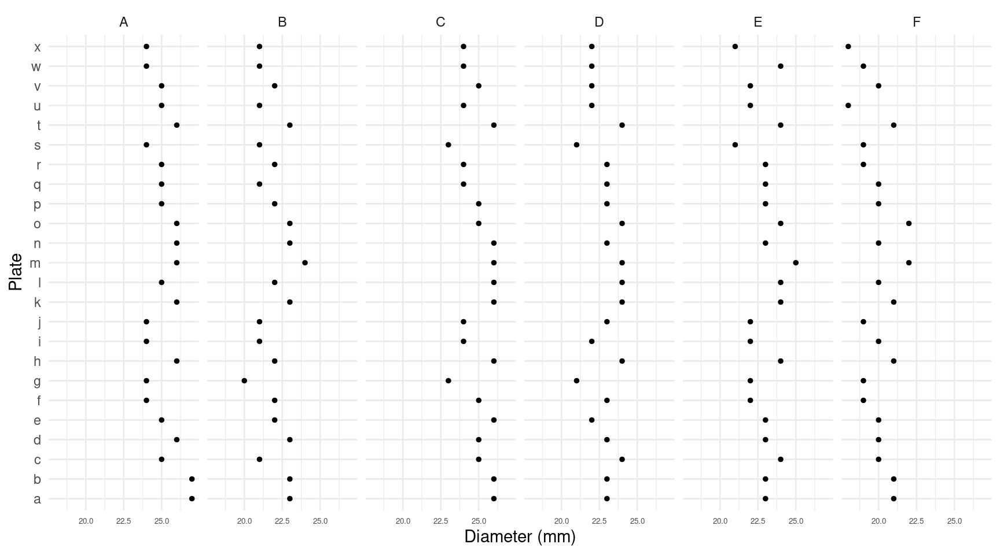
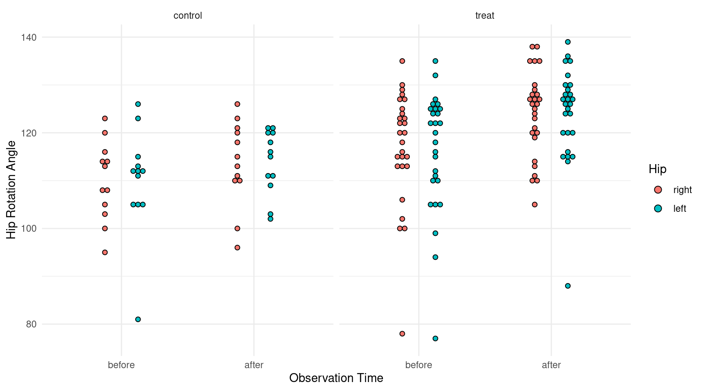

You can also download a PDF copy of this lecture.
Example: The model we specified for the
Sitka data can be written as \[
E(Y_{ij}) = \beta_0 + \beta_1 o_{ij} + \beta_2 w_{ij} + \beta_3
o_{ij}w_{ij} + \delta_i + \gamma_iw_{ij},
\] where \(o_{ij}\) is an
indicator for if the observation is from the ozone treatment condition
and \(w_{ij}\) is weeks. We can also
write this model as \[
E(Y_{ij}) = \underbrace{\beta_0 + \beta_1 o_{ij} +
\delta_i}_{\beta_{0ij}} + \underbrace{(\beta_2 + \beta_3o_{ij} +
\gamma_i)}_{\beta_{1ij}}w_i,
\] or \[
E(Y_{ij}) = \beta_{0ij} + \beta_{1ij}w_{ij},
\] to show that the model assumes a linear relationship between
expected size and weeks, but where the “intercept” \(\beta_{0ij}\) depends on the treatment
condition and tree, and the “slope” \(\beta_{1ij}\) depends on the treatment
condition and tree because \[\begin{align*}
\beta_{0ij} & = \beta_0 + \beta_1o_{ij} + \delta_i \\
\beta_{1ij} & = \beta_2 + \beta_3o_{ij} + \gamma_i.
\end{align*}\] Models with random effects written in this way are
sometimes called “random coefficient” models. The coefficients \(\beta_{0ij}\) and \(\beta_{1ij}\) are random (due to \(\delta_i\) and \(\gamma_i\)) but may also depend on one or
more explanatory variables (such as treatment condition via \(o_{ij}\)).
The nlme function from the nlme package
can estimate a linear or nonlinear regression model with random
coefficients (assuming a normally-distributed response variable and
random parameters). We estimated a model for the Sitka data
as follows.
library(MASS)
library(lme4)
m <- lmer(exp(size) ~ treat * I(Time/7) + (1 + I(Time/7) | tree),
data = Sitka, REML = FALSE)
summary(m)$coefficients Estimate Std. Error t value
(Intercept) -305.123 31.251 -9.764
treatozone 110.675 37.799 2.928
I(Time/7) 17.565 1.685 10.424
treatozone:I(Time/7) -5.516 2.038 -2.707I am using REML = FALSE to use maximum likelihood rather
than restricted maximum likelihood (REML) for estimation so
that we can compare the results with nlme, which only uses
maximum likelihood.
library(nlme)
m <- nlme(exp(size) ~ b0 + b1 * I(Time/7),
fixed = b0 + b1 ~ treat,
random = b0 + b1 ~ 1 | tree,
start = c(0,0,0,0), data = Sitka)
summary(m)Nonlinear mixed-effects model fit by maximum likelihood
Model: exp(size) ~ b0 + b1 * I(Time/7)
Data: Sitka
AIC BIC logLik
3947 3978 -1965
Random effects:
Formula: list(b0 ~ 1, b1 ~ 1)
Level: tree
Structure: General positive-definite, Log-Cholesky parametrization
StdDev Corr
b0.(Intercept) 148.699 b0.(I)
b1.(Intercept) 8.266 -0.987
Residual 19.575
Fixed effects: b0 + b1 ~ treat
Value Std.Error DF t-value p-value
b0.(Intercept) -305.12 31.41 313 -9.714 0.0000
b0.treatozone 110.68 37.99 313 2.913 0.0038
b1.(Intercept) 17.56 1.69 313 10.371 0.0000
b1.treatozone -5.52 2.05 313 -2.693 0.0075
Correlation:
b0.(I) b0.trt b1.(I)
b0.treatozone -0.827
b1.(Intercept) -0.980 0.810
b1.treatozone 0.810 -0.980 -0.827
Standardized Within-Group Residuals:
Min Q1 Med Q3 Max
-2.96548 -0.38922 -0.05501 0.38267 4.82179
Number of Observations: 395
Number of Groups: 79 The nlme function is like nls in that it
needs starting values for the (fixed) parameters, but since the model is
linear we do not need particularly good starting values.
Example: Now consider a nonlinear
regression model with random effects for the Loblolly data
that come with R.
head(Loblolly)Grouped Data: height ~ age | Seed
height age Seed
1 4.51 3 301
15 10.89 5 301
29 28.72 10 301
43 41.74 15 301
57 52.70 20 301
71 60.92 25 301p <- ggplot(Loblolly, aes(x = age, y = height)) +
geom_line(aes(group = Seed), alpha = 0.5, size = 0.01) +
geom_point(size = 0.5) + facet_wrap(~ Seed, ncol = 7) +
ylab("Height (ft)") + xlab("Age (yr)") + theme_minimal()
plot(p) Suppose we want to estimate the nonlinear growth model \[ E(H) = \theta_1 + (\theta_2 - \theta_1)e^{-a\log(2)/\theta_3}, \] where \(H\) and \(a\) are height and age, respectively, \(\theta_1\) is the asymptote as \(a \rightarrow \infty\), and \(\theta_2\) is an “intercept” parameter, and \(\theta_3\) is the age at which the tree is half way between \(E(H) = \theta_2\) and \(E(H) = \theta_1\). To allow for differences between trees with respect to \(\theta_1\) and \(\theta_3\) (but not \(\theta_2\)) we could write the model as \[ E(H_{ij}) = \theta_{1i} + (\theta_{2} - \theta_{1i})e^{-a_{ij}\log(2)/\theta_{3i}}, \] where \(H_{ij}\) and \(a_{ij}\) are now the height and age of the \(j\)-th observation of the \(i\)-th tree.
m <- nlme(height ~ t1 + (t2 - t1) * exp(-age * log(2)/t3),
fixed = t1 + t2 + t3 ~ 1,
random = t1 + t3 ~ 1 | Seed,
start = c(t1 = 100, t2 = 0, t3 = 15),
data = Loblolly)
summary(m)Nonlinear mixed-effects model fit by maximum likelihood
Model: height ~ t1 + (t2 - t1) * exp(-age * log(2)/t3)
Data: Loblolly
AIC BIC logLik
239.1 256.1 -112.5
Random effects:
Formula: list(t1 ~ 1, t3 ~ 1)
Level: Seed
Structure: General positive-definite, Log-Cholesky parametrization
StdDev Corr
t1 5.4054 t1
t3 1.2334 0.769
Residual 0.6462
Fixed effects: t1 + t2 + t3 ~ 1
Value Std.Error DF t-value p-value
t1 101.03 2.4708 68 40.89 0
t2 -8.71 0.2850 68 -30.55 0
t3 17.48 0.6289 68 27.79 0
Correlation:
t1 t2
t2 0.615
t3 0.918 0.698
Standardized Within-Group Residuals:
Min Q1 Med Q3 Max
-1.88049 -0.59420 -0.04009 0.70784 1.47988
Number of Observations: 84
Number of Groups: 14 We can plot the estimated growth curves (both per tree and average) as follows.
d <- expand.grid(age = seq(0, 50, length = 100), Seed = unique(Loblolly$Seed))
d$yhat.ind <- predict(m, newdata = d, level = 1) # individual tree
d$yhat.avg <- predict(m, newdata = d, level = 0) # average tree
p <- ggplot(Loblolly, aes(x = age, y = height)) +
geom_line(aes(y = yhat.ind), data = d, linetype = 3) +
geom_line(aes(y = yhat.avg), data = d) +
geom_point(size = 0.5) + facet_wrap(~ Seed, ncol = 7) +
ylab("Height (ft)") + xlab("Age (yr)") + theme_minimal()
plot(p)
Example: The data frame Soybean from
the nlme package has data from an experiment looking at
soybean growth.
head(Soybean)Grouped Data: weight ~ Time | Plot
Plot Variety Year Time weight
1 1988F1 F 1988 14 0.106
2 1988F1 F 1988 21 0.261
3 1988F1 F 1988 28 0.666
4 1988F1 F 1988 35 2.110
5 1988F1 F 1988 42 3.560
6 1988F1 F 1988 49 6.230p <- ggplot(Soybean, aes(x = Time, y = weight)) +
geom_point() + facet_wrap(~ Plot, ncol = 8) +
labs(x = "Time (days after planting)",
y = "Weight (average leaf weight per plant in grams)") +
theme_minimal()
plot(p)
p <- ggplot(Soybean, aes(x = Time, y = weight)) +
geom_point(size = 1) + facet_wrap(~ Variety) +
geom_line(aes(group = Plot), size = 0.1) +
labs(x = "Time (days after planting)",
y = "Weight (average leaf weight per plant in grams)") +
theme_minimal()
plot(p) Consider a logistic growth model which can be written as \[ E(W) = \frac{\theta_1}{1 + e^{-(t-\theta_2)/\theta_3}}, \] where \(\theta_1\) is the asymptote as \(t \rightarrow \infty\), \(\theta_2\) is the time at which the expected weight is \(\theta_1/2\), and \(\theta_3\) is inversely related to the steepness of the curve at \(\theta_2\). We could assume that each parameter varies by plot, and is also affected by variety as follows.
m <- nlme(weight ~ theta1 / (1 + exp(-(Time - theta2) / theta3)), data = Soybean,
fixed = theta1 + theta2 + theta3 ~ Variety,
random = theta1 + theta2 + theta3 ~ 1 | Plot,
start = c(20, 0, 60, 0, 10, 0),
control = nlmeControl(msMaxIter = 1000))
summary(m)$tTable Value Std.Error DF t-value p-value
theta1.(Intercept) 16.9466 1.0308 359 16.4410 1.121e-45
theta1.VarietyP 4.5664 1.4630 359 3.1212 1.947e-03
theta2.(Intercept) 54.8759 1.0561 359 51.9630 4.219e-169
theta2.VarietyP 0.1828 1.4504 359 0.1260 8.998e-01
theta3.(Intercept) 8.2284 0.4748 359 17.3304 2.526e-49
theta3.VarietyP 0.3741 0.6345 359 0.5896 5.558e-01In more complex models getting the inferences you want from a
nlme object can be a bit tricky. Functions like
contrast and emmeans will not work with a
nlme object. But you can use the lincon
function, although you need to tell it how to extract the parameter
estimates from nlme (it needs to use the fixef
function). Here we can get results like those returned by
summary.
trtools::lincon(m, fest = fixef) estimate se lower upper tvalue df pvalue
theta1.(Intercept) 16.9466 1.0232 14.9412 18.952 16.5620 Inf 1.311e-61
theta1.VarietyP 4.5664 1.4523 1.7199 7.413 3.1442 Inf 1.666e-03
theta2.(Intercept) 54.8759 1.0483 52.8212 56.931 52.3455 Inf 0.000e+00
theta2.VarietyP 0.1828 1.4398 -2.6391 3.005 0.1269 Inf 8.990e-01
theta3.(Intercept) 8.2284 0.4713 7.3046 9.152 17.4580 Inf 2.994e-68
theta3.VarietyP 0.3741 0.6299 -0.8605 1.609 0.5939 Inf 5.525e-01The estimate of mean \(\theta_1\)
parameter for the F variety is given by theta1.(Intercept).
But the estimate of the mean \(\theta_1\) parameter for the P variety is
the sum of the theta1.(Intercept) and
theta1.VarietyP parameters. This can be obtained as
follows.
trtools::lincon(m, a = c(1,1,0,0,0,0), fest = fixef) estimate se lower upper tvalue df pvalue
(1,1,0,0,0,0),0 21.51 1.031 19.49 23.53 20.87 Inf 9.498e-97Again we can plot this model as we did with the Loblolly
data/model, although setting up the data frame is a little more
complicated because plots and variety are not crossed.
library(dplyr)
library(tidyr)
d <- Soybean %>% dplyr::select(Plot, Variety) %>% unique() %>%
group_by(Plot, Variety) %>% tidyr::expand(Time = seq(14, 84, length = 100))
d$yhat.ind <- predict(m, newdata = d, level = 1)
d$yhat.avg <- predict(m, newdata = d, level = 0)
p <- ggplot(Soybean, aes(x = Time, y = weight)) +
geom_line(aes(y = yhat.ind, group = Plot), data = d, alpha = 0.125) +
geom_line(aes(y = yhat.avg), data = d) +
geom_point(size = 1, alpha = 0.25) + facet_wrap(~ Variety) +
labs(x = "Time (days after planting)",
y = "Weight (average leaf weight per plant in grams)") + theme_minimal()
plot(p)
Crossed random effects might be specified when two (or more) factors modeled as having random effects are crossed (i.e., having a “factorial design” structure).
Example: Six samples of penicillin were tested using 24 plates. The response varaible was the diameter of the zone of inhibition of the growth of a bacteria.
p <- ggplot(Penicillin, aes(x = plate, y = diameter)) +
geom_point(size = 1) + facet_wrap(~ sample, ncol = 6) +
coord_flip() + theme_minimal() +
theme(axis.text.x = element_text(size = 5)) +
labs(y = "Diameter (mm)", x = "Plate")
plot(p) Let \(Y_{ij}\) denote the diameter of inhibition for the \(i\)-th sample (\(i = 1, 2, \dots, 6\)) and the \(j\)-th plate (\(j = 1, 2, \dots, 26\)). A model might be \[ E(Y_{ij}) = \beta_0 + \delta_i + \zeta_j \ \ \text{or} \ \ Y_{ij} = \beta_0 + \delta_i + \zeta_j + e_{ij}. \] where \(\delta_i\) and \(\zeta_j\) are sample-specific and plate-specific effects, respectively. Here we will model both as random effects, each with an independent normal distribution. Note that we don’t have any fixed effects.
m <- lmer(diameter ~ (1 | plate) + (1 | sample), data = Penicillin)
summary(m)Linear mixed model fit by REML ['lmerMod']
Formula: diameter ~ (1 | plate) + (1 | sample)
Data: Penicillin
REML criterion at convergence: 330.9
Scaled residuals:
Min 1Q Median 3Q Max
-2.0792 -0.6714 0.0629 0.5838 2.9796
Random effects:
Groups Name Variance Std.Dev.
plate (Intercept) 0.717 0.847
sample (Intercept) 3.731 1.932
Residual 0.302 0.550
Number of obs: 144, groups: plate, 24; sample, 6
Fixed effects:
Estimate Std. Error t value
(Intercept) 22.972 0.809 28.4Example: Consider the following data from a study that examined mating success with multiple combinations of male and female salamanders.
library(hglm.data)
data(salamander)
head(salamander, 12) Season Experiment TypeM TypeF Cross Male Female Mate
1 Summer 1 R R RR 1 1 1
2 Summer 1 W R RW 14 1 1
3 Summer 1 R R RR 5 1 1
4 Summer 1 W R RW 11 1 0
5 Summer 1 R R RR 4 1 1
6 Summer 1 W R RW 15 1 1
7 Summer 1 R R RR 5 2 1
8 Summer 1 W R RW 15 2 1
9 Summer 1 R R RR 3 2 1
10 Summer 1 W R RW 13 2 1
11 Summer 1 R R RR 1 2 1
12 Summer 1 W R RW 12 2 1The question here is how the combination female and male salamanders in terms of population (W = “White Side”, R = “Rough Butt”) affects mating success, while accounting for individual differences in the salamanders themselves.
salamander$Cross <- relevel(salamander$Cross, ref = "WR")
m <- glmer(Mate ~ Cross + (1 | Male) + (1 | Female),
family = binomial, data = salamander)
summary(m)Generalized linear mixed model fit by maximum likelihood (Laplace Approximation) [glmerMod
]
Family: binomial ( logit )
Formula: Mate ~ Cross + (1 | Male) + (1 | Female)
Data: salamander
AIC BIC logLik deviance df.resid
430.6 453.9 -209.3 418.6 354
Scaled residuals:
Min 1Q Median 3Q Max
-2.051 -0.616 0.271 0.597 2.551
Random effects:
Groups Name Variance Std.Dev.
Male (Intercept) 1.04 1.02
Female (Intercept) 1.17 1.08
Number of obs: 360, groups: Male, 60; Female, 60
Fixed effects:
Estimate Std. Error z value Pr(>|z|)
(Intercept) -1.896 0.446 -4.25 2.1e-05 ***
CrossRR 2.904 0.561 5.18 2.2e-07 ***
CrossRW 2.202 0.588 3.75 0.00018 ***
CrossWW 2.886 0.549 5.26 1.4e-07 ***
---
Signif. codes: 0 '***' 0.001 '**' 0.01 '*' 0.05 '.' 0.1 ' ' 1
Correlation of Fixed Effects:
(Intr) CrssRR CrssRW
CrossRR -0.716
CrossRW -0.771 0.678
CrossWW -0.709 0.521 0.661Nested factors occur when they form a hierarchical
structure. For example, in the Sitka data the levels of
tree are nested within levels of treat (i.e.,
ozone or control), and in the Soybean data the levels of
Plot are nested within levels of Variety.
Nested random effects when the levels of one factor, modeled as a random
effect, are nested within the levels of another factor that is also
modeled as a random effect.
Example: The Pastes data frame from the
lme4 package is from a study of the strength of
chemical pastes. Paste was delivered in a cask, and there were three
casks per batch, and 10 batches. Two tests were run per cask.
head(Pastes, 12) strength batch cask sample
1 62.8 A a A:a
2 62.6 A a A:a
3 60.1 A b A:b
4 62.3 A b A:b
5 62.7 A c A:c
6 63.1 A c A:c
7 60.0 B a B:a
8 61.4 B a B:a
9 57.5 B b B:b
10 56.9 B b B:b
11 61.1 B c B:c
12 58.9 B c B:cNote that levels of cask are not the same between
batches — i.e., cask a in batch A is
not the same as cask a in batch B,
for example. The sample variable was created to identify a
particular cask. We could model these data as \[
E(Y_{ijk}) = \beta_0 + \delta_i + \zeta_{ij},
\] where \(Y_{ijk}\) is \(k\)-th (\(k=1,2\)) test a paste from the \(j\)-th (\(j=1,2,3\)) cask from the \(i\)-th batch (\(i=1,2,\dots,10\)). So here \(\delta_i\) is the effect of the \(i\)-th batch, and \(\zeta_{ij}\) is the effect of the \(j\)-th cask from the \(i\)-th batch.
m <- lmer(strength ~ (1|batch) + (1|cask:batch), data = Pastes)
summary(m)Linear mixed model fit by REML ['lmerMod']
Formula: strength ~ (1 | batch) + (1 | cask:batch)
Data: Pastes
REML criterion at convergence: 247
Scaled residuals:
Min 1Q Median 3Q Max
-1.4798 -0.5156 0.0095 0.4720 1.3897
Random effects:
Groups Name Variance Std.Dev.
cask:batch (Intercept) 8.434 2.904
batch (Intercept) 1.657 1.287
Residual 0.678 0.823
Number of obs: 60, groups: cask:batch, 30; batch, 10
Fixed effects:
Estimate Std. Error t value
(Intercept) 60.053 0.677 88.7Note that you could use sample in place of
cask:batch.
Example: Consider the following data from an experiment on the treatment of arthritis.
myhips <- faraway::hips %>% pivot_longer(cols = c(fbef,faft,rbef,raft),
names_to = "obs", values_to = "angle") %>%
mutate(time = rep(c("before","after"), n()/2)) %>%
mutate(variable = rep(c("flexion","flexion","rotation","rotation"), n()/4)) %>%
mutate(time = factor(time, levels = c("before","after")))
head(myhips,10)# A tibble: 10 × 7
grp side person obs angle time variable
<fct> <fct> <fct> <chr> <dbl> <fct> <chr>
1 treat right 1 fbef 125 before flexion
2 treat right 1 faft 126 after flexion
3 treat right 1 rbef 25 before rotation
4 treat right 1 raft 36 after rotation
5 treat left 1 fbef 120 before flexion
6 treat left 1 faft 127 after flexion
7 treat left 1 rbef 35 before rotation
8 treat left 1 raft 37 after rotation
9 treat right 2 fbef 135 before flexion
10 treat right 2 faft 135 after flexion p <- ggplot(subset(myhips, variable == "flexion"), aes(x = time, y = angle, fill = side)) +
theme_minimal() + geom_dotplot(binaxis = "y", stackdir = "center", binwidth = 1,
position = position_dodge(width = 0.5)) + facet_wrap(~ grp) +
labs(x = "Observation Time", y = "Hip Rotation Angle", fill = "Hip")
plot(p) Here for each of two response variables (flexion and rotation) we have two observations (before and after) for each hip (side) for each person. Here we specify a random effect for each person and a random effect for each hip within each person. Here we will consider the rotation response variable. Note that I am assuming that there is not, on average, an effect of left versus right side.
m <- lmer(angle ~ time * grp + (1|person) + (1|person:side),
subset = variable == "rotation", data = myhips)
summary(m)Linear mixed model fit by REML ['lmerMod']
Formula: angle ~ time * grp + (1 | person) + (1 | person:side)
Data: myhips
Subset: variable == "rotation"
REML criterion at convergence: 1033
Scaled residuals:
Min 1Q Median 3Q Max
-2.0275 -0.5006 0.0254 0.4548 1.8289
Random effects:
Groups Name Variance Std.Dev.
person:side (Intercept) 33.1 5.76
person (Intercept) 27.6 5.25
Residual 18.0 4.24
Number of obs: 156, groups: person:side, 78; person, 39
Fixed effects:
Estimate Std. Error t value
(Intercept) 25.000 2.105 11.88
timeafter 0.958 1.224 0.78
grptreat -0.222 2.529 -0.09
timeafter:grptreat 5.634 1.471 3.83
Correlation of Fixed Effects:
(Intr) timftr grptrt
timeafter -0.291
grptreat -0.832 0.242
tmftr:grptr 0.242 -0.832 -0.291What is the estimated change in expected rotation from before to after treatment in each group?
trtools::contrast(m,
a = list(time = "after", grp = c("control","treat")),
b = list(time = "before", grp = c("control","treat")),
cnames = c("control","treat")) estimate se lower upper tvalue df pvalue
control 0.9583 1.2238 -1.440 3.357 0.783 Inf 4.336e-01
treat 6.5926 0.8159 4.993 8.192 8.080 Inf 6.468e-16The icc_specs function from the specr
package can be used to produce estimates concerning the “variance
components” (i.e., the variance due to person, side, and error).
specr::icc_specs(m) grp vcov icc percent
1 person:side 33.14 0.4210 42.10
2 person 27.59 0.3506 35.06
3 Residual 17.97 0.2284 22.84